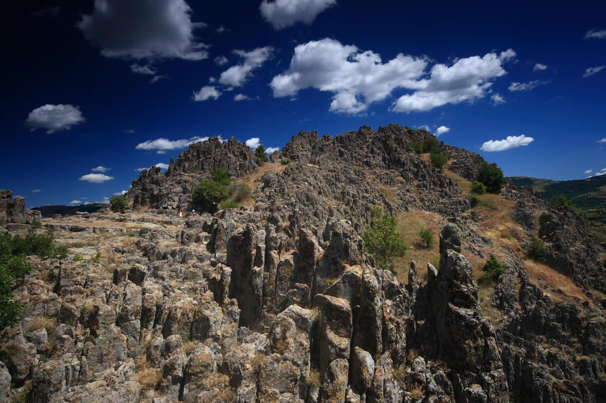

Excavations since 2001
What the Ground Held
Around a hundred ritual pits, rings of stone, smashed pottery and small clay figures of legs and livestock — the physical residue of what people came up here to do.
The large number of artefacts found in distinct archaeological contexts — together with the topography itself: a hill dominating its surroundings, a wide field of view from the summit, an easy sunlit approach up the south-east side — confirms the use of Kokino as a mountain sanctuary, where the Bronze Age inhabitants of the surrounding area performed their “mountain” rites.
Two kinds of ritual construction
Almost every find came from the highest part of the site, or a little below it on the northern slope. Excavation identified two distinct types of ritual structure: ritual pits and circular stone constructions.
Ritual pits
About a hundred pits were formed around natural fissures in the rock. The mouth of each crack was enclosed with smaller stones mixed with earth, and sometimes with clay. The artefacts lie at the bottom, covered with earth and gravel, and the opening of the filled pit was then framed with stone slabs brought in from elsewhere — they do not come from the site.
Circular stone constructions
These are rings of larger, naturally broken stones, one to two metres across. Offerings were placed in the centre, then the deposit was covered with earth and gravel until it took the shape of a small tumulus.
What was put in them
The finds from both kinds of structure are ceramic vessels and their fragments, hand mills for grain, pyramidal weights, spindle whorls, moulds for casting bronze objects, and stone axes. Alongside these, small votive ceramic figurines were placed — representations of parts of the human body and of domestic animals.
One funnel-shaped vessel points to libation — the ritual pouring out of liquids.
Dating the finds
Much of the material dates from the Early Bronze Age (21st–17th centuries BC) and from the Late Bronze Age (14th–11th centuries BC). Finds from the Middle Bronze Age are far rarer.
Excavations of the last few years uncovered traces of an Iron Age settlement (7th century BC) built on the southern slope of the hill. This is key evidence that the site was no longer being used as a sanctuary by then — although its use as an observatory may well have continued.
Many of these objects are on display in the Kokino collection at the National Museum in Kumanovo, including a stone mould for casting bronze pendants and a bowl fragment decorated with incised waves and suns.
Why here
Nothing about this hilltop is convenient. Water had to be carried; the wind is constant; the climb is real. People came anyway, and kept coming for well over a thousand years. Whatever Kokino was, it was worth the walk.